텔레마케팅관리사 (2014-05-25 기출문제)
1과목: 판매관리
1. Kotler는 메가 마케팅(Mega-marketing)에서 6p를 주장하였는데, 6p에 해당되지 않는 것은?
- 영향력(Power)
- 공중관계(Public Relation)
- 참여자(Participants)
- 촉진(Promotion)
(정답률: 52%)

2. 어떤 회사나 그 회사의 제품에 관한 홍보를 소비자들의 입을 빌어 "입에서 입으로"라는 원리를 이용한 방식으로 빠른 시일 내에 큰 효과를 볼 수 있는 마케팅 수단 중의 하나인 것은?
- 바이러스 마케팅
- 패션 마케팅
- 관계 마케팅
- 니치 마케팅
(정답률: 82%)
3. 아웃바운드 텔레마케팅 시 핵심사항으로 거리가 먼 것은?
- 주 고객층의 목록 또는 DB를 확보하여 적극적인 TM에 활용하여야 한다.
- 텔레마케터 등에 대한 조직관리와 고객관리 전략수립이 뛰어나고 노련한 수퍼바이저와 매니저가 있어야 한다.
- 자질을 갖춘 텔레마케터를 통해 회사는 어떠한 상품이든지 선정하여 판매를 해야 경쟁에서 살아남을 수 있다.
- 정교한 스크립트를 작성하여 고객의 니즈별, 심리적 상황에 따라 적절히 응대하여야 한다.
(정답률: 82%)
4. 다음 설명에 해당되는 제품의 수명주기는?
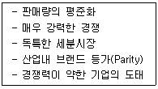
- 도입기
- 성장기
- 성숙기
- 쇠퇴기
(정답률: 78%)
5. 자사의 제품이나 서비스를 알고는 있으나, 아직 구매행동으로까지 연결되지 않았고 마케팅이나 접촉활동을 전개하면 실질적인 고객으로 가능하다고 예상되는 고객을 무엇이라고 하는가?
- 비활동고객
- 로열티고객
- 단골고객
- 가망고객
(정답률: 91%)
6. 다음 중 제품의 가격결정시 고가 전략이 적합한 경우는?
- 규모의 경제효과를 통한 이득이 미미할 때
- 시장수요의 가격탄력성이 높을 때
- 원가 우위를 확보하고 있어 경쟁기업이 자사 제품의 가격만큼 낮추기 힘들 때
- 시장에서 경쟁자의 수가 많을 것으로 예상될 때
(정답률: 60%)
7. 인구통계학적 변수로 거리가 먼 것은?
- 연 령
- 성 별
- 지 역
- 사회계층
(정답률: 64%)
8. 서비스 품질에 대한 설명으로 옳은 것은?
- 서비스는 눈에 보이지 않는 것이므로 품질을 측정할 수 없다.
- 서비스는 모든 고객에게 적용 가능한 절대적 품질 수준이 존재한다.
- 서비스 품질 수준에 대한 산업별 기준 값이 존재한다.
- 서비스 품질은 고객이 기대하는 기대 수준 대비 고객이 느끼는 성과에 의해 측정된다.
(정답률: 77%)
9. 생산자와 재판매업자가 적극적인 광고와 인적판매를 이용하여 촉진해야 하는 소비재 유형은?
- 편의품
- 선매품
- 전문품
- 비탐색품
(정답률: 49%)
10. 다음은 어떤 가격조정전략에 해당하는가?
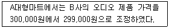
- 세분화 가격결정
- 심리적 가격결정
- 촉진적 가격결정
- 지리적 가격결정
(정답률: 83%)
11. 다음은 브랜드의 어떤 특성을 보여주는 것인가?
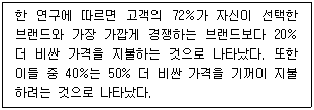
- 대중성(Popularity)
- 가격(Price)
- 명성(Reputation)
- 자산(Equity)
(정답률: 42%)
12. 고객의 다양한 정보를 컴퓨터에 축적하여 이것을 가공∙비교∙분석∙통합하여 마케팅활동에 재활용할 수 있도록 하는 마케팅 기법은?
- 표적 마케팅
- 고객관리 마케팅
- 데이터베이스 마케팅
- 정보화 마케팅
(정답률: 89%)
13. 고객과의 커뮤니케이션에 초점을 맞춘 분석으로 고객과 기업 간의 접촉, 횟수, 금액사용 등의 고객 분석은?
- 고객평생가치분석
- RFM분석
- 손익분기분석
- ROI(Return On Investment)분석
(정답률: 80%)
14. 다음 중 아웃바운드 텔레마케팅 전용상품의 요건으로 맞는 것은?
- 고가의 상품
- 소비자들에 덜 알려진 신제품
- 소비자들의 인식보다 앞서는 기술혁신상품
- 표준화된 상품
(정답률: 55%)
15. 제품의 분류 중 전문품의 특성에 해당하지 않는 것은?
- 대체품이 존재하지 않고 브랜드 인지도가 높다.
- 소비자가 품질, 가격, 색상, 디자인을 중심으로 대체상품을 비교한 후 선택하는 성향의 제품이다.
- 일반적으로 고가격 정책을 유지한다.
- 명품으로 유명 디자이너의 상품, 의상, 미술작품 등이 해당된다.
(정답률: 83%)
16. 다음 중 데이터베이스 마케팅 활용 절차를 바르게 나열한 것은?
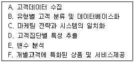
- A → B → C → D → E → F
- B → A → C → E → D → F
- C → B → A → F → E → D
- D → A → C → B → E → F
(정답률: 77%)
17. 다음 ( ) 안에 들어갈 내용으로 알맞은 것은?
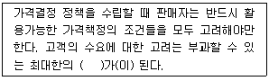
- 변동비
- 원가경쟁
- 가격상한선
- 가격의 범위
(정답률: 72%)
18. 가격결정에 영향을 미치는 요인 중 내부적 요인에 해당하지 않는 것은?
- 마케팅 목표
- 목표시장 점유율
- 마케팅믹스 전략
- 경쟁사 가격
(정답률: 84%)
19. 로열티 고객이 가져다주는 이점으로 적절치 않은 것은?
- 고객관리 유지비용이 절감된다. 그리고 기본적으로 제품 및 서비스의 누계이익 기여도가 높아지고 불평, 불만, A/S 건수가 줄어든다.
- 추천성이 높아 고객창출이 용이해진다. 고객확보의 매력은 기존고객이 자사에 제품 및 서비스를 다른 잠재고객에게 추천함으로써 새로운 로열티 고객을 창출할 수 있다는 점이다.
- 특정인의 이름이나 직위 등 입수된 정보를 활용하여 커뮤니케이션을 시도하며, 접촉하는 개개인에 따라 각기 다른 메시지를 전달할 수 있다.
- 자사 제품과 서비스를 구입하여 애용해 주는 로열티 고객의 사전기대를 정확하게 파악하고 끊임없이 이를 상회하는 제품과 서비스를 제공할 수도 있다.
(정답률: 60%)
20. 아웃바운드 텔레마케팅의 활동내용과 거리가 먼 것은?
- 신규회원가입유치
- 기존고객에 대한 교차판매
- Q&A에 의한 정형적 응답
- 우량고객에 대한 리마인드 콜(Remind Call)
(정답률: 83%)
21. 소비자의 구매의사결정 과정으로 맞는 것은?
- 정보탐색 → 문제인식 → 대안의 평가 및 선택 → 구매 → 구매 후 행동
- 대안의 평가 및 선택 → 문제인식 → 정보탐색 → 구매 → 구매 후 행동
- 문제인식 → 대안의 평가 및 선택 → 정보탐색 → 구매 → 구매 후 행동
- 문제인식 → 정보탐색 → 대안의 평가 및 선택 → 구매 → 구매 후 행동
(정답률: 82%)
22. 아웃바운드 텔레마케팅을 시도할 때의 유의사항으로 적절하지 않은 것은?
- 고객에게 전화를 건 목적과 이유를 먼저 말하면 콜이 중단될 우려가 많으므로 일단 홍보 후 그 이유를 설명하는 것이 바람직하다.
- 고객은 이익에 민감하므로 콜을 경청하면 틀림없이 이익을 얻을 수 있다는 확신을 주는 것이 중요하다.
- 제품이나 서비스에 대한 설명 시 주가 되는 상품을 먼저 소개하고 다음에 부수적인 상품을 소개하는 것이 좋다.
- 고객이 구매 등의 행동을 하도록 유도해야 한다.
(정답률: 84%)
23. 효과적인 시장세분화의 기준으로 거리가 먼 것은?
- 측정가능성(Measurable)
- 접근가능성(Accessible)
- 이윤성(Profitability)
- 실질성(Substantial)
(정답률: 60%)
24. 기업의 내적 강점과 약점, 그리고 외부위협과 기회를 자세히 평가하는 데 사용할 수 있는 기법은?
- SWOT 분석
- 시장세분화
- 전략적 관리
- 수익성 분석
(정답률: 86%)
25. 다음 중 기업의 일반적인 포지셔닝 전략수립 단계를 순서대로 바르게 나열한 것은?
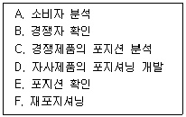
- A → B → C → D → E → F
- A → B → D → C → E → F
- A → C → B → D → E → F
- A → B → C → D → F → E
(정답률: 88%)
2과목: 시장조사
26. 다음 중 획득하고자 하는 정보의 내용을 결정한 이후 이루어져야 할 질문지 작성과정을 바르게 나열한 것은?
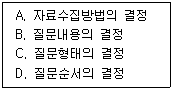
- A → B → C → D
- B → C → D → A
- B → D → C → A
- C → A → B → D
(정답률: 58%)
27. 다음은 마케팅조사의 어느 단계에 해당하는가?
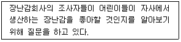
- 표적시장의 결정
- 적절한 정보의 수집
- 문제의 정의
- 조사계획의 수립
(정답률: 33%)
28. 예비조사와 사전조사를 잘못 설명하고 있는 것은?
- 예비조사는 탐색적인 조사의 성격을 가지고 있다.
- 사전조사는 설문지 작성 초기단계에 예비조사는 설문지를 작성한 후에 실시한다.
- 사전조사는 설문지 작성과정에서 발생한 오류를 점검하기 위한 조사이다.
- 예비조사를 통해 조사문제 규명 및 가설을 명백화 한다.
(정답률: 53%)
29. 시장조사를 위한 면접조사의 특성으로 틀린 것은?
- 커뮤니케이션에 전문 능력을 가진 진행자의 역할이 중요하다.
- 형식적이고 정형화된 절차를 통해 정보를 수집한다.
- 여유를 갖고 깊고 풍부한 정보를 수집할 수 있다.
- 마케팅 조사에서 그 활용 빈도가 높아지고 있다.
(정답률: 65%)
30. 자료를 수집할 때 사용될 수 있는 방법 중 시간이 적게 들고, 면접자에 대한 감독이 용이하고, 컴퓨터 기술사용이 가능한 조사방법은?
- 개별면접조사
- 전화조사
- 우편조사
- 패널조사
(정답률: 70%)
31. 시장조사 시 주로 사전조사에 사용하는 자료는?
- 1차 자료
- 현장자료
- 2차 자료
- 실사자료
(정답률: 53%)
32. 시장조사의 절차를 계획, 실시, 분석과 보고 3단계로 구분할 때, 실시에 해당하는 것은?
- 코 딩
- 편 집
- 설문지 설계
- 조사계획의 수립
(정답률: 33%)
33. 검정요인 중 총체적 개념과 다른 변수와의 관계에 있어서, 총체적 개념을 구성하는 요소들 중 어떤 것이 관찰된 결과에 결정적인 영향을 미치는가 하는 것을 파악하는 데 사용되는 것은?
- 억제변수
- 왜곡변수
- 구성변수
- 매개변수
(정답률: 37%)
34. 측정의 신뢰성을 향상시킬 수 있는 방법으로 가장 적합하지 않은 것은?
- 설문지의 문항별 설명을 명확히 하여 응답자별로 해석상의 차이가 발생하지 않도록 한다.
- 조사원들에 대한 교육을 강화하여 설문을 명확히 이해하도록 하고, 질문 방식 등을 표준화시킨다.
- 성의가 없거나 일관성 없게 응답한 경우 설문지 자체를 폐기시킴으로써 위험요소를 없앤다.
- 중요한 질문의 경우 반복 질문을 피함으로써 혼선을 피한다.
(정답률: 58%)
35. 실험연구에 가장 적합한 인과관계 추론방법이라고 할 수 있는 것은?
- 차이법
- 일치법
- 잉여법
- 공변법
(정답률: 44%)
36. 다음 설문지 내용 분석 시 설문지 작성 원칙에 가장 위배되는 사항은?
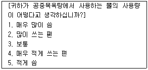
- 응답자를 비하하거나 무시하는 표현의 금지
- 응답하기 곤란한 질문을 간접적으로 질문
- 특정사실을 가정한 질문 금지
- 유도 또는 강요하는 표현 금지
(정답률: 57%)
37. 다음 중 탐색조사의 종류에 해당하지 않는 것은?
- 문헌조사
- 전문가의견조사
- 실험조사
- 사례조사
(정답률: 70%)
38. 조사항목 선정에서 지켜야 할 원칙으로 부적합한 것은?
- 조사에 직접 관련되는 항목만을 선정해야 한다.
- 응답하기 곤란한 문항도 반드시 포함시킨다.
- 조사항목의 수는 최소한에 그쳐야 효율적이다.
- 통계조사의 경우는 자료처리나 통계를 염두에 두어야 한다.
(정답률: 78%)
39. 측정의 수준에 따라 4가지 종류의 척도로 구분할 때, 가장 적은 정보를 갖는 척도부터 가장 많은 정보를 갖는 척도를 순서대로 나열한 것은?
- 명목척도, 비율척도, 등간척도, 서열척도
- 서열척도, 명목척도, 등간척도, 비율척도
- 명목척도, 서열척도, 등간척도, 비율척도
- 명목척도, 서열척도, 비율척도, 등간척도40
(정답률: 67%)
40. FGI(Focus Group Interview)조사 방법에 관한 설명으로 가장 적합한 것은?
- 면접 조사의 한 방법이다.
- 연령별, 지역별로 실시하는 전화 조사의 한 방법이다.
- 표적 집단과 관계없이 불특정 다수를 대상으로 하는 조사 방법이다.
- 표적 집단에 대한 전화 조사의 한 방법이다.
(정답률: 46%)
41. 인구 통계학적 질문으로 거리가 먼 것은?
- 성 별
- 나 이
- 선호하는 취미
- 학 력
(정답률: 79%)
42. 시장조사 시 조사자가 지켜야 할 사항과 가장 거리가 먼 것은?
- 조사 대상자의 존엄성과 사적인 권리를 존중해야 한다.
- 조사결과는 성실하고 정확하게 보고하여야 한다.
- 자료의 신뢰성과 객관성을 확보하기 위해 자료원 보호는 반드시 배제하여야 한다.
- 조사의 목적을 성실히 수행하여야 하며, 조사결과의 왜곡, 축소 등은 회피하여야 한다.
(정답률: 79%)
43. 우리는 조사하고자 하는 모든 속성은 측정을 거치기 이전에는 추상적인 상태로 표현되어 있다. 이렇게 추상적인 개념만으로는 실제 현상 속에서 관찰하거나 측정할 수 없다. 따라서 실제 관찰 가능한(측정 가능한, 숫자를 부여할 수 있는) 상태로 정의하는 것은?
- 조작정 정의
- 개념적 정의
- 척도에 대한 정의
- 자료에 대한 정의
(정답률: 46%)
44. 존 스튜어트 밀(Mill)은 현상 또는 변인들 간의 인과관계를 추론하기 위한 세 가지 방법을 제안하였다. 다음 중 인과관계를 추론하기 위한 세 가지 방법에 속하지 않는 것은?
- 일반화(Generalization) 방법
- 일치(Agreement) 방법
- 차이(Difference) 방법
- 동시변화(Concomitant Variation) 방법
(정답률: 35%)
45. 어떤 정보를 얻기 위해서 연구대상으로 선정된 집단 전체를 무엇이라 하는가?
- 확 률
- 추출틀
- 표 본
- 모집단
(정답률: 75%)
46. 다음에 나타나는 측정상의 주요 문제점은?
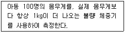
- 타당성이 없다.
- 대표성이 없다.
- 안전성이 없다.
- 일관성이 없다.
(정답률: 79%)
47. 개방형 질문에 대한 설명으로 틀린 것은?
- 질문에 대하여 자유롭고 제한받지 않고 응답할 수 있다.
- Pilot Study 또는 탐색적 조사에 쓰인다.
- 대규모 조사에 적합하다.
- 응답자에게 폐쇄형 질문보다 더 심리적 부담을 준다.
(정답률: 49%)
48. 시장조사의 용어에 대한 설명으로 옳지 않은 것은?
- 코딩이란 각각의 질문에 응답한 결과를 보통 숫자로 변환하는 과정을 말한다.
- 신뢰수준이란 신뢰구간이 모집단의 모수를 포함하는 확률을 말한다.
- 독립변수란 종속변수의 결과로 측정된 변수를 말한다.
- 가중치란 각각의 데이터에 대하여 서로의 상관관계를 고려하여 적용된다.
(정답률: 45%)
49. 관찰을 통한 자료수집의 장점으로 옳은 것은?
- 조사자가 관심을 보이는 유형을 다양하게 얻을 수 있다.
- 신속하게 자료를 수집할 수 있다.
- 자료 수집방법이 보다 객관적이고 정확하다.
- 조사비용이 가장 적게 든다.
(정답률: 26%)
50. 광화문 광장 신설에 대한 서울시민들의 의견을 조사하기 위하여 설문지를 우편으로 보내서 자료를 수집하기로 하였다. 이러한 경우에 설문지의 회수율을 높이기 위하여 사용할 수 있는 방법 중 가장 거리가 먼 것은?
- 설문지 응답자 중 추첨을 통해 선물을 보내드린다는 사실을 적어서 설문지와 함께 보낸다.
- 설문 내용에 하나라도 체크가 되지 않은 부분이 있다면 응답자에게 다시 발송됨을 설문지에 명기한다.
- 설문 조사에 대한 시민 참여를 극대화하기 위해 대중매체를 이용하여 홍보를 지속적으로 한다.
- 설문지를 다 작성하여 우편을 보낸 모든 응답자에게 서울시에서 제공하는 편의시설 이용권을 발송해 준다.
(정답률: 72%)
3과목: 텔레마케팅관리
51. 콜센터에서 성공한 관리자의 속성으로 틀린 것은?
- 기업의 목적과 콜센터의 목적을 일치시킨다.
- 콜센터의 관리는 내∙외부의 측정요소에 대한 즉각적인 접근을 필요로 한다는 것을 이해한다.
- 교육 훈련에 소요되는 비용을 없애기 위해 노력한다.
- 서비스의 양만이 아닌 서비스의 질을 강조한다.
(정답률: 73%)
52. 텔레마케터의 능력개발을 위한 교육방법으로 부적합한 것은?
- 신상품이 출시될 경우 스크립트를 개발하여 제공한다.
- 정기적인 모니터링을 통해 개인별 코칭을 실시한다.
- 상담실습 및 훈련과정보다 업무지식습득에 초점을 맞추어야 한다.
- 업무에 따른 표준 매뉴얼을 제공한다.
(정답률: 79%)
53. 다음과 같은 업무를 수행하는 사람은?
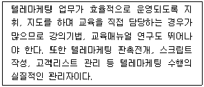
- 경영자
- 고 객
- 수퍼바이저
- 텔레마케터
(정답률: 77%)
54. 서비스 효율 관리 지표의 정의로 맞는 것은?
- 인당 처리 콜 수는 상담원이 1일 처리한 상담처리 콜 수를 의미한다.
- 평균 통화 시간은 상담원이 고객과의 통화와 후처리를 하고 다음 상담을 대기하기까지의 평균시간을 말한다.
- 통화 중 대기 시간은 고객이 상담원과 통화를 하기 위해 기다리는 시간을 의미한다.
- 시간당 처리 콜 수는 상담원이 시간당 처리 가능한 예측 콜 수를 의미한다.
(정답률: 41%)
55. 인바운드 콜센터의 콜량 예측을 위한 지표 설명으로 틀린 것은?
- 서비스레벨 – 기준목표시간 내 응답한 콜의 비율
- 평균통화처리시간 – 평균통화시간과 평균마무리처리시간을 합한 것
- 총매출액 – 일정기간 동안 텔레마케팅을 실시한 결과 발생한 총매출액
- 평균통화시간 – 상담원이 고객 한 사람과의 상담에 소요되는 평균적인 시간
(정답률: 32%)
56. 콜센터 이용고객의 서비스 만족도를 측정하기에 적합하지 않은 것은?
- 고객별 유형
- 평균 포기비율
- 평균 응대시간
- 통화품질평가
(정답률: 48%)
57. CTI(Computer Telephony Integration)시스템에서 측정가능한 성과지표로 틀린 것은?
- 서비스 레벨
- 평균통화시간
- 통화품질 만족도
- 통화 포기율
(정답률: 42%)
58. 콜센터의 효율적 성과관리 원칙으로 거리가 먼 것은?
- 콜센터 성과지표를 사업목표와 연계
- 객관적이고 투명한 평가기반 마련
- 성과결과에 대한 중간 점검
- 평가결과에 대한 철저한 비밀보장
(정답률: 73%)
59. 콜센터의 성과향상을 위한 보상계획을 수립할 때 고려해야 할 사항으로 가장 거리가 먼 것은?
- 지속적이고 일관성 있는 보상계획을 수립해야 한다.
- 달성 가능한 목표수준을 고려해야 한다.
- 직원을 참여시켜야 한다.
- 팀보다 개인의 성과에 초점을 맞추어야 한다.
(정답률: 74%)
60. 콜센터에서 이용가능한 회선수가 충분치 않아 차단된 통화율을 의미하는 것은?
- Blocking Rate
- Busy Hour Traffic Rate
- Recall Factor Rate
- Down Call Rate
(정답률: 63%)
61. 텔레마케팅에 대한 설명으로 가장 적합한 것은?
- 텔레폰과 마케팅의 결합어이다.
- 무작위의 고객 데이터베이스를 사용한다.
- 일방향의 커뮤니케이션이다.
- 고객반응에 대한 효과측정이 용이하다.
(정답률: 43%)
62. 상담원이 자신이 맡은 직무를 수행하는 데 한 가지 직무에 수반되는 과업의 수나 종류를 늘리는 것은?
- 직무확대
- 직무몰입
- 직무평가
- 직무만족
(정답률: 78%)
63. 텔레마케팅 관련 용어 중 QA의 바른 의미는?
- Quality Assist
- Quality Assert
- Quality Assurance
- Quality Agency
(정답률: 57%)
64. 콜센터 문화에 영향을 미치는 개인적 요인에 해당하는 것은?
- 행정당국의 제도적 지원
- 상담원의 근로선택의 자유
- 상담원에 대한 직업의 매력도
- 전문직으로서의 자기개발65
(정답률: 57%)
65. 교육훈련의 전달방법을 결정하는 요인과 가장 거리가 먼 것은?
- 비 용
- 학습내용
- 학습자의 선호도
- 교육프로그램 개발자의 수준
(정답률: 58%)
66. 인바운드 콜센터의 정화상담 시 중요사항으로 맞는 것은?
- 고객문의 내용파악
- 통화가능여부 확인
- 전화건 목적 설명
- 통화상대방 확인
(정답률: 76%)
67. 콜센터 운영 시 고려해야 할 사항으로 틀린 것은?
- 주요 대상고객의 데이터 확보와 관리방안이 필요함
- 직원 채용방법과 관리방안 마련이 필요함
- 콜센터 운영에 따른 지속적 비용관리가 필요함
- 초기운영은 전화 채널만을 이용하는 것이 바람직함
(정답률: 77%)
68. 스크립트를 작성하는 목적으로 틀린 것은?
- 균등한 대화를 사용하여 정확한 효과를 측정하고 효율적인 운영체제를 구축한다.
- 통화의 목적과 어떻게 대화를 이끌어 갈 것인가의 방향을 잡아준다.
- 텔레마케터가 주관적으로 상담하기 위해서 작성한다.
- 상담원의 능력과 수준을 일정수준 이상으로 유지시켜 준다.
(정답률: 78%)
69. OJT(On the Job Training)의 설명으로 틀린 것은?
- OJT는 사내직업훈련이다.
- OJT 리더는 피교육자의 문제점, 건의사항을 수렴한다.
- 실무에 투입되기 전 평가결과에 대해 피드백 한다.
- 현장적응 훈련이다.
(정답률: 48%)
70. 다음 교육훈련과정개발을 위한 교수모형설계의 5단계 중 ( ) 안에 들어갈 알맞은 것은?
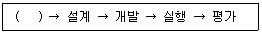
- 전 략
- 분 석
- 목표설정
- 피드백
(정답률: 39%)
71. 텔레마케팅 적용분야 중 업무의 복잡도가 가장 큰 분야는?
- 주문접수
- 고객서비스
- 판매지원
- 고객관계관리
(정답률: 73%)
72. 상담원에 대한 코칭의 목적이 아닌 것은?
- 상담사의 현재수준인식과 목표관리
- 감독 일원화 및 전문화의 원칙 학습
- 상담원의 역할 인식과 업무 집중화
- 집중적인 학습과 상담품질 향상
(정답률: 79%)
73. 리더십 특성 이론에 대한 설명으로 틀린 것은?
- 리더의 개인적 자질에 의해 리더십의 성공이 좌우된다고 가정한다.
- 유능한 리더는 지적 능력, 성격, 신체적 조건 등에서 탁월해야 한다고 보았다.
- 우수한 리더 확보를 위해 선발에만 의존하지 않고 훈련 프로그램을 통해서도 양성할 수 있다고 보았다.
- 개인적 특성이 리더십 발휘능력과 상관관계가 있다는 일관된 증거가 존재하지 않아 한계를 가지는 이론이라고 할 수 있다.
(정답률: 40%)
74. 텔레마케팅 조직구성원의 역할이 잘못 연결된 것은?
- 교육담당자 – 텔레마케터의 경력개발을 위한 교육프로그램을 개발한다.
- 모니터링담당자 – 텔레마케터가 고객과 통화한 내용을 분석한다.
- 시스템담당자 – 텔레마케터가 효율적으로 업무를 할 수 있도록 스크립트를 개발한다.
- 수퍼바이저 – 텔레마케터의 스케줄을 관리한다.
(정답률: 58%)
75. 다음이 설명하고 있는 현상으로 맞는 것은?
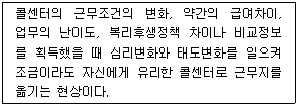
- 한우리 문화
- 유리벽
- 콜센터 바이러스
- 철새둥지
(정답률: 75%)
4과목: 고객응대
76. 의사소통(Communication)에 대한 설명으로 틀린 것은?
- 의사소통으로 표현되지만 보다 넓은 의미이다.
- 특정대상에게 구체적인 정보나 감정을 전달하는 것이다.
- 욕구 충족을 위한 인간의 행동이다.
- 의사전달 → 감정이입 → 정보교환의 순으로 나타난다.
(정답률: 54%)
77. 불만고객에 대한 상담원의 클레임 처리방법으로 틀린 것은?
- 고객에게 정중하게 사과하기
- 고객과 함께 협력하여 문제 해결하기
- 회사의 입장을 정당화 할 수 있는 논리를 제시하기
- 고객에게 도움이 될 수 있는 최선의 대안 찾기
(정답률: 79%)
78. 고객 상담의 필요성을 증가시키는 요인으로 가장 거리가 먼 것은?
- 소비자불만과 소비자피해의 양적 증가
- 소비생활의 복잡화와 다양화
- 소비자권리에 대한 소비자 의식 상승
- 제품수요 대비 공급부족 현상 심화
(정답률: 74%)
79. 폐쇄형 질문에 대한 설명으로 가장 적합한 것은?
- 응답자의 충분한 의견을 반영할 수 있다.
- 예/아니오 등의 단답을 이끌어 내는 질문기법이다.
- 문제해결에 도움을 줄 수 있는 방법을 구상하면서 고객의 욕구사항을 파악하는 질문기법이다.
- 응답자가 주관식으로 답변을 할 수 있는 질문기법이다.
(정답률: 68%)
80. 행동유형별 특성에 대한 응대법 중 바른 것은?
- 추진형은 편안하고 친근감 있게 대한다.
- 표현형은 요점만을 제시하고 결정은 스스로 내리게 한다.
- 온화형은 관심을 갖는 시간이 짧기 때문에 흥미를 잃지 않도록 유의한다.
- 분석형은 자료를 제시하고 애매한 일반화는 피한다.
(정답률: 66%)
81. 다음 중 친밀감(Rapport) 형성에 관한 설명으로 가장 적합한 것은?
- 고객에게 슬픈 감정을 유도하는 기법이다.
- 가망고객을 진찰하듯 탐색하는 기법이다.
- 품위를 지키는 프로다운 자세를 느끼도록 하는 기법이다.
- 고객에게 신뢰감을 느끼도록 하는 기법이다.
(정답률: 74%)
82. 다음 중 조직 측면에서의 CRM 성공요인에 해당하지 않는 것은?
- 최고경영자의 관심과 지원
- 고객 및 정보 지향적 기업문화
- 전문 인력 확보
- 데이터 통합수준
(정답률: 50%)
83. 커뮤니케이션의 원칙이 아닌 것은?
- 커뮤니케이션은 신뢰성을 중시한다.
- 커뮤니케이션은 메시지를 통해 내용을 전달한다.
- 커뮤니케이션은 수신자에게 유용한 경로로 접촉한다.
- 커뮤니케이션은 1회성의 성격을 띤다.
(정답률: 78%)
84. 다음 중 고객의 반론극복을 위한 순서로 적합한 것은?
- 공감 → 탐색 → 이점부각 → 동의
- 탐색 → 공감 → 이점부각 → 동의
- 공감 → 탐색 → 동의 → 이점부각
- 탐색 → 공감 → 동의 → 이점부각
(정답률: 42%)
85. CRM에 대한 설명으로 틀린 것은?
- CRM은 고객점유율보다 시장점유율을 중시한다.
- CRM은 고객과 일대일관계를 중시한다.
- CRM은 통합된 멀티채널을 활용한다.
- CRM은 상호적 서비스를 제공한다.
(정답률: 76%)
86. 고객 특성에 따른 고객응대로 적절하지 않은 것은?
- 과장되게 말을 잘하는 사람은 콤플렉스를 감추고 있는 사람으로 어디까지가 진의인지 파악하고 말보다 객관적인 자료로 대응하는 것이 적합하다.
- 빈정거리기를 잘하는 사람은 열등감과 허영심이 강한 사람이므로 자존심을 존중해 주면서 대한다.
- 생각에 생각을 거듭하는 사람은 신중하나 판단력이 부족하므로 먼저 결론을 내는 화법이 적절하다.
- 말의 허리를 자르는 사람은 이기적 성격의 소유자로 반론하지 말고 질문식 설득화법으로 대응한다.
(정답률: 36%)
87. FAQ(Frequently Asked Question) 작성시 유의해야 할 점이 아닌 것은?
- FAQ는 전문적이고 고도화된 답변만을 엄선하여 올린다.
- FAQ는 반복적이고 잦은 질의응답에 대해서 답변하는 응답코너를 제시한다.
- FAQ는 네티즌이나 고객이 쉽게 이해할 수 있도록 분류하여 제시하면 더욱 효과적이다.
- FAQ는 적절한 질문, 부적절한 질문 등의 검증을 거쳐 등록한다.
(정답률: 76%)
88. 다음의 고객관련 내용을 토대로 고객의 커뮤니케이션 유형을 진단할 때 이 고객과의 상담을 성공적으로 이끌기 위해 표현되는 응대화법으로 가장 적절한 것은?
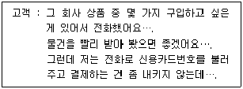
- "카드 결제가 가장 빠르지만 내키지 않으시면 온라인으로 송금을 해주시거나 직접 방문하셔서 구입하시는 방법도 있습니다."
- "다른 방법은 전화주문만큼 빠르지 않습니다. 카드결제를 하셔야 빨리 상품을 받으실 수 있으니 카드결제를 하시기 바랍니다."
- "요즘은 거의 모든 고객들이 전화로 신용카드 번호를 불러주십니다. 문제없습니다."
- "그러면 좀 더 생각해 보시고 다시 전화 주시기 바랍니다."
(정답률: 74%)
89. 다음 CRM 시스템의 구성요소 중 고객정보 분석부문에 해당하는 것은?
- 채널 관리자
- 로직 저장소
- 의사결정 지원도구
- 콜 분배기
(정답률: 38%)
90. 다음 중 CRM을 통한 기업의 핵심과제로 가장 거리가 먼 것은?
- 특정사업에 적합한 소비자 가치를 규명한다.
- 각 고객집단이 가진 가치의 상대적 중요성을 인지한다.
- 고객에 대한 이해를 바탕으로 시스템을 구축한다.
- 기업이 원하는 방법으로 고객가치를 충족한다.
(정답률: 72%)
91. 성공하는 텔레마케터가 되기 위해 가져야 할 태도로 적합하지 않은 것은?
- 항상 고객의 문제를 도와주고 해결해주는 전문가라는 자긍심을 갖는다.
- "고객과의 약속은 반드시 지킨다."라는 철학을 갖고 업무에 임한다.
- 자신의 상담능력을 향상시키기 위해 자기개발에 최선을 다한다.
- 고객불만의 수용과 처리에 있어 상담자 자신의 권한이 제한되어 있으므로 실제적인 처리보다는 일차적인 응대에만 최선을 다한다.
(정답률: 79%)
92. 비언어적 의사소통에서 사람이 무의식적으로 다른사람과 상호작용을 할 때 사용하는 영역에 대한 설명으로 틀린 것은?
- 친밀한 거리의 영역은 연인이나 가까운 친구, 부모에게 안겨있는 어린아이 사이에서 찾아볼 수 있다.
- 개인적 거리의 영역은 파티에서 편안하게 이야기할 수 있고 파트너와 쉽게 접촉할 수 있는 거리이다.
- 대중적 거리의 영역은 접촉이 없이 비교적 사적인 이야기들을 주고받을 수 있는 절친한 직장동료 사이의 관계이다.
- 사회적 거리의 영역은 소비자나 서비스를 제공하는 사람에게 이야기할 때와 같이 주로 대인업무를 수행할 때 사용된다.
(정답률: 71%)
93. 주문접수 처리업무의 특성에 대한 설명으로 틀린 것은?
- 편리한 주문접수처리 기능은 인바운드 텔레마케팅의 대표적인 업무이다.
- 통화성공률을 높이는 것이 절대적으로 요구된다.
- 대금결제의 안정성 보장을 위해 VAN사업자를 통한 업무제휴가 필요하다.
- 전산으로 처리되는 업무가 증가하고 있기 때문에 상담사교육의 중요성은 과거보다 감소되고 있다.
(정답률: 71%)
94. 음성에 대한 설명으로 바르지 않은 것은?
- 고저 강약 – 지나치게 힘이 들어가면 역효과를 낼 수 있다.
- 말의 속도 – 일반 대화보다 약간 빠른 정도가 좋다.
- 억양 – 여러 가지 감정을 나타낼 수 있다.
- 말의 끊어 읽기 – 신속한 응대를 위해 가급적 사용하지 않는다.
(정답률: 63%)
95. 고객생애가치를 평가하기 위해 필요한 세부 구성요소가 아닌 것은?
- 할인율
- 공헌마진
- 마케팅비용
- 고객추천가치
(정답률: 16%)
96. 고객에게 긍정적인 이미지를 심어주기 위한 텔레마케터의 능력과 관련이 없는 것은?
- 자신감
- 전문성
- 신뢰감
- 우월감
(정답률: 84%)
97. 고객응대시 요구되는 지식 중 구매고객층, 구매목적, 구매시기 등의 내용이 포함된 것은?
- 고객시장에 관한 지식
- 고객의 구매심리에 관한 지식
- 제품 및 서비스 지식
- 생산, 유통과정과 품질에 관한 지식
(정답률: 58%)
98. 메타그룹의 산업보고서에서 처음 제안된 CRM시스템 아키텍처의 3가지 구성요소 중 운영적 CRM의 설명으로 맞는 것은?
- 프런트 오피스(Front Office)의 고객 접점, 마케팅 및 콜센터 고객서비스를 연계한 거래 업무를 지원한다.
- 운영업무에서 발생하는 데이터를 이용하여 마케팅 분석과 판매 분석 등의 작업을 지원한다.
- 고객과 기업, 기업 내의 조직 간의 업무일원화와 커뮤니케이션을 목적으로 활동한다.
- 상호 연관 서비스를 어플리케이션으로 고객과의 접점관리 및 지원활동을 한다.
(정답률: 30%)
99. 고객 상담시 구매로 유도할 수 있는 적극적인 질문기법으로 바람직하지 않은 것은?
- 고객이 확실히 원하는 것을 찾을 수 있는 질문을 한다.
- 상담사의 전문성을 강조한다.
- 제품과 서비스에 관한 세부사항 등을 구체적으로 말한다.
- 편견을 갖지 않고 상대방과 대화한다.
(정답률: 72%)
100. 효과적인 의사소통이 이루어지기 위해 지켜져야 하는 사항으로 틀린 것은?
- 의사소통의 목적을 파악하고 그 목적에 맞는 의사소통을 해야 한다.
- 의사소통시 최대한 많은 양의 정보를 제공하는 것이 좋다.
- 서로 나누는 의사소통에 진실이 담겨 있어야 한다.
- 서로에게 말하고자 하는 의도가 분명히 드러나도록 한다.
(정답률: 80%)